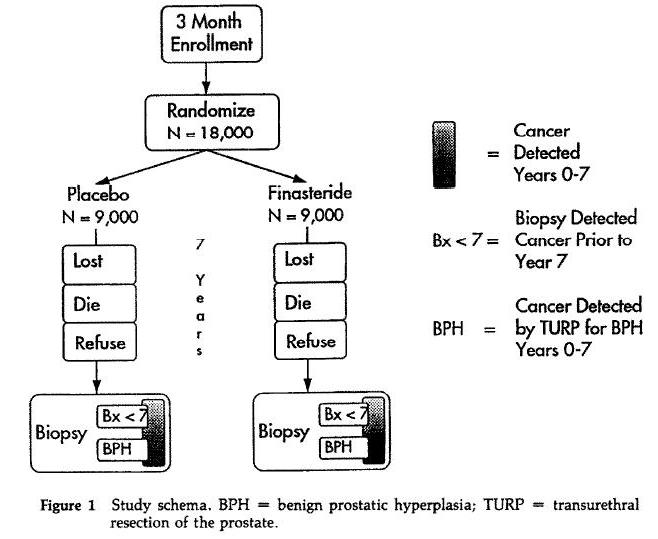

2 Arm Design
In a 2 arm design there are two treatment groups. This could be two different treatments or it could be one treatment and a control group. Each arm of the study could have different levels (usually meaning different doses). An example of a typical two arm schema is provided below.

Source: Controlled Clinical Trials
Volume 16, Issue 3, June 1995, Pages 150-163
-- ErinEsp - 01 Feb 2010